Non-Alcoholic Drinks
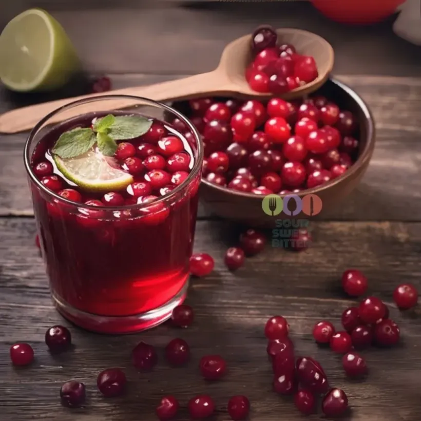
Cranberry Mors
Traditional refreshing drink made from wild cranberries.
€4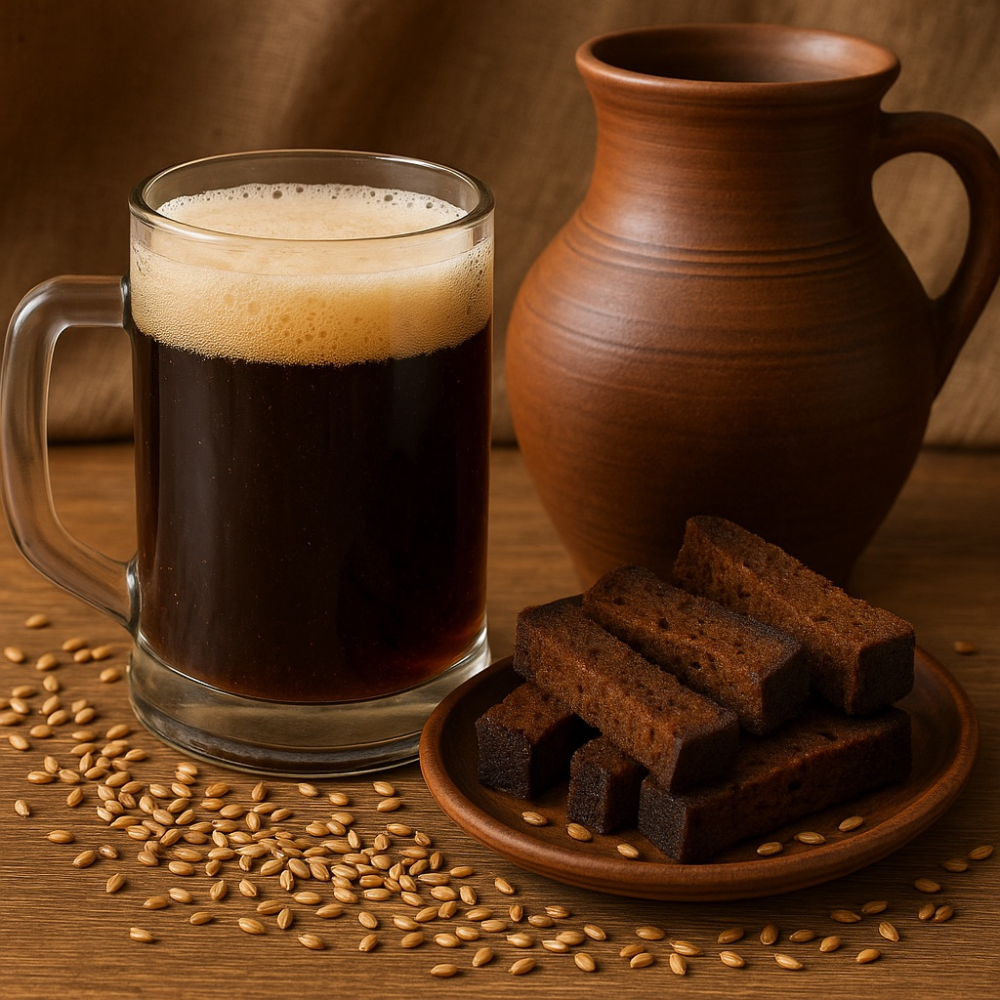
Kvas
Classic fermented beverage made from rye bread.
€4.50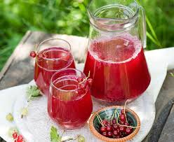
Fruit Kompot
Home-style boiled drink made from seasonal fresh fruits (Apple, Cherry, Strawberry, Raspberry, Apricot).
€3.50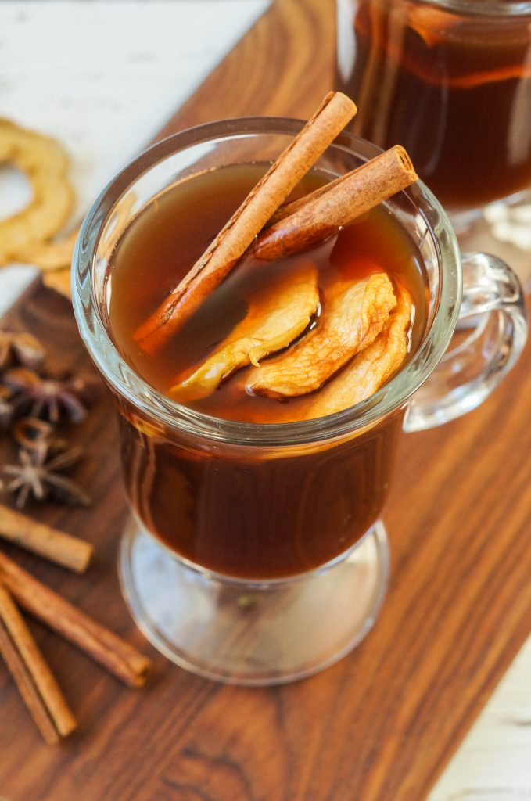
Uzvar
Smoky and sweet beverage made from dried fruits and honey.
€4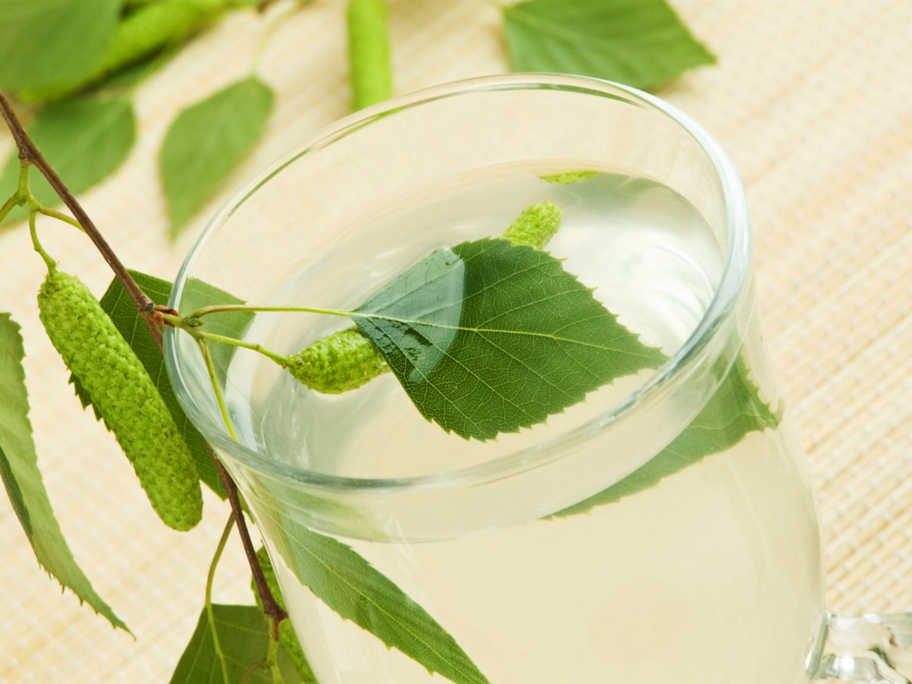
Birch Sap
Natural, slightly sweet water collected from birch trees.
€3.50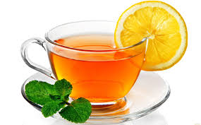
Black Tea
Classic strong black tea, served plain or with fresh lemon slices.
€3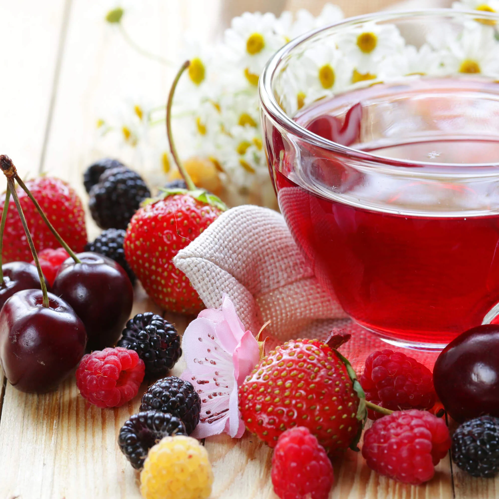
Fruit Tea
Aromatic blend of dried forest berries and hibiscus. Lemon available on request.
€3.50Alcoholic Drinks
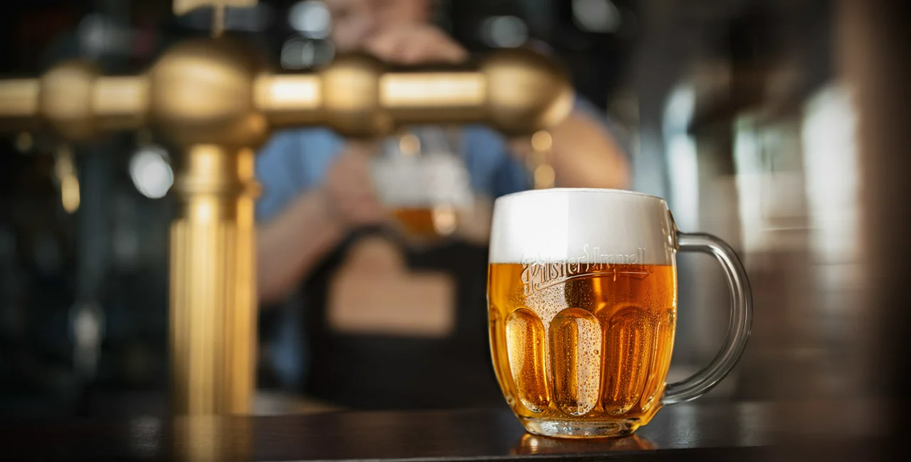
Pilsner
World-famous Czech pale lager with a crisp, hoppy finish.
€5.50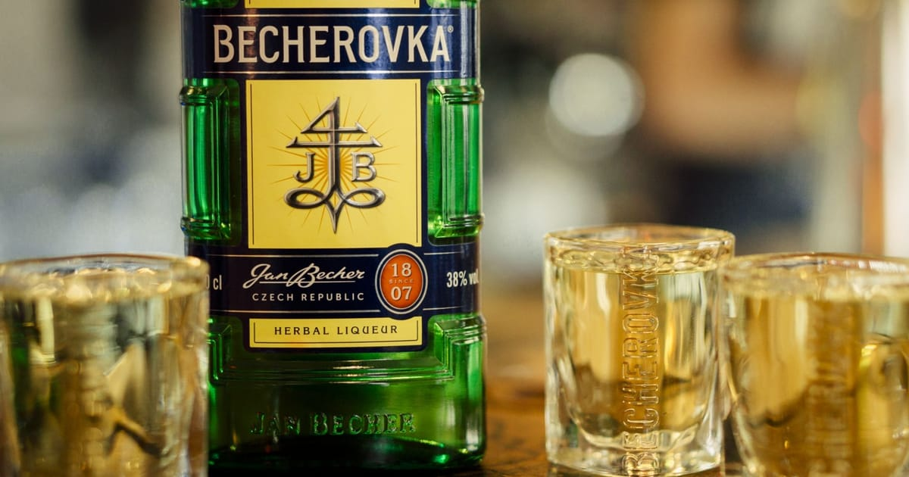
Becherovka
Traditional Czech herbal liqueur with a secret blend of herbs.
€6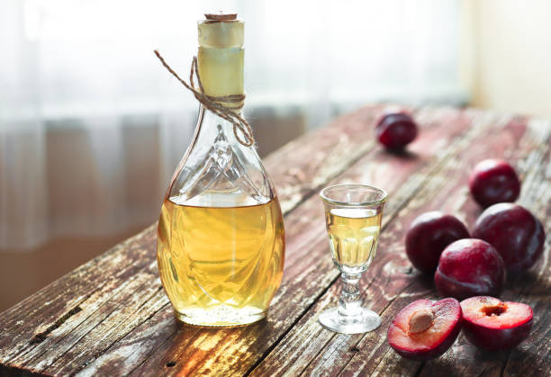
Slivovitz
Strong and aromatic fruit brandy distilled from plums.
€7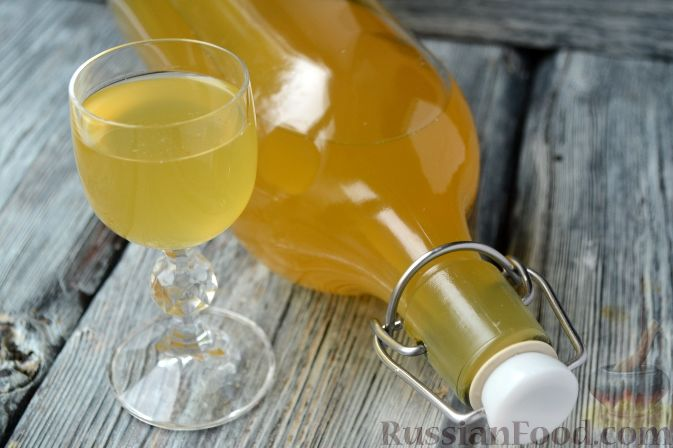
Medovukha
Ancient Slavic alcoholic beverage brewed from natural honey.
€6.50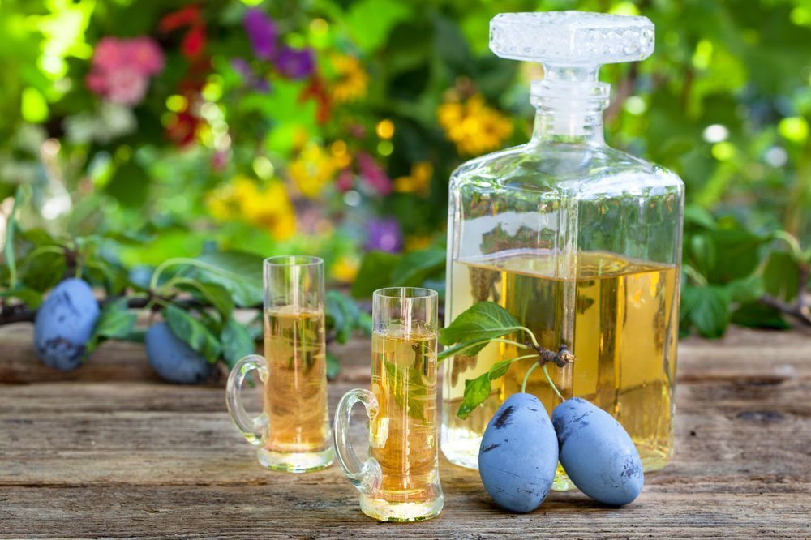
Rakia
Potent fruit spirit distilled from grapes, apricots, or pears.
€7